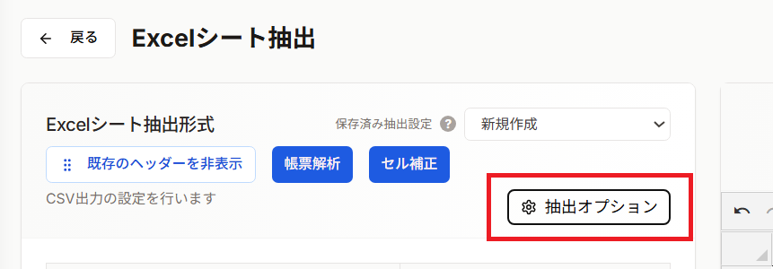

抽出オプション（シート全体の設定）では、Excelシート全体に対する抽出条件を設定できます。CSV出力設定画面で「抽出オプション」ボタンをクリックすると、設定ダイアログが表示されます。

対象セルに始点となる1セルを指定した場合、そこからデータの終端まで一括で範囲を指定できます。
| 選択肢 | 説明 | 例 |
|---|---|---|
| 一番下まで | 始点セルから指定行数までデータを抽出 | A2から100行目まで → 「100」と入力 |
| 一番右まで | 始点セルから指定列までデータを抽出 | A1からZ列まで → 「Z」と入力 |
セルの表示形式を無視して、セルに入力されている生データ（元の値）を抽出します。
| Excelの表示 | 実際の値 | OFF時の出力 | ON時の出力 |
|---|---|---|---|
| ¥1,000 | 1000 | ¥1,000 | 1000 |
| 2024/01/15 | 45306 | 2024/01/15 | 45306 |
| 100% | 1 | 100% | 1 |
Excelシート内の空白行・空白列を除外し、データのみを詰めて抽出します。
Excelで非表示に設定されている行や列のデータを出力から除外します。
元のExcelデータ（2行目と列Cが非表示）:
A B C(非表示) D
1 顧客 金額 備考 日付
2 田中 1000 メモ1 2024/1/1 ← 非表示行
3 佐藤 2000 メモ2 2024/1/2
ONにした場合の出力:
A B D 顧客 金額 日付 佐藤 2000 2024/1/2
設定ダイアログで行った変更は、「適用」ボタンをクリックすることで保存されます。保存した設定は、CSV出力パターンとして登録でき、次回以降も再利用できます。